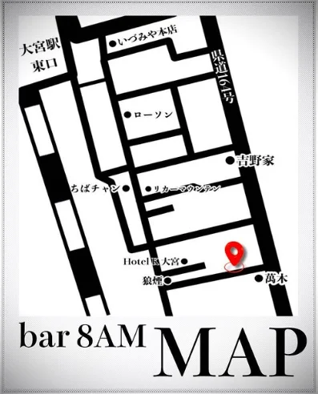
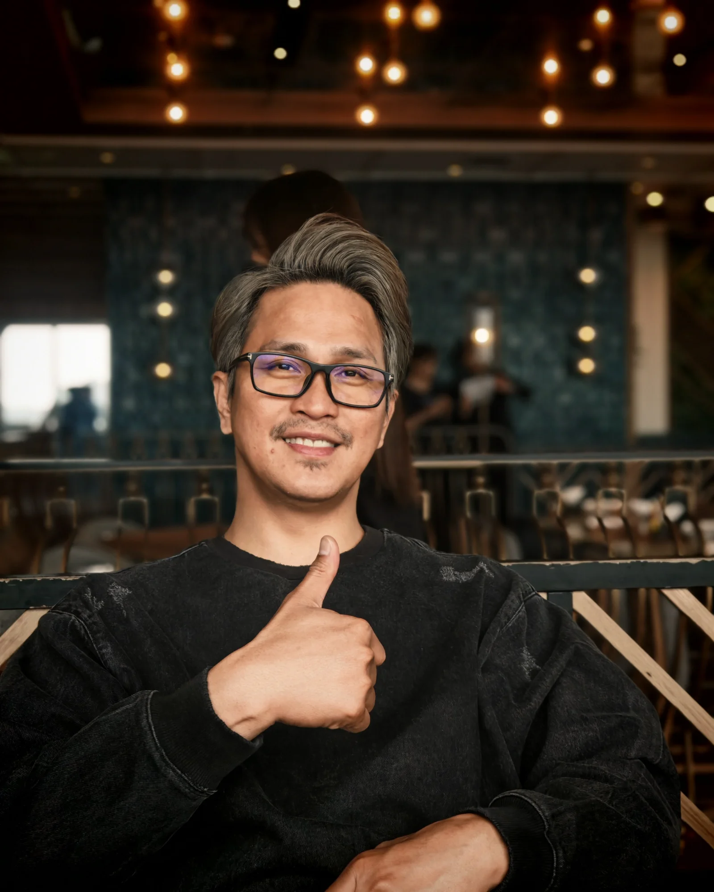

アクセス
Bar 8 AMへようこそ
Bar 8 AMは、大宮で落ち着いた時間を楽しめるバーです。
- 大宮駅東口を出ます
- 駅前通りを目印に徒歩約5分進みます
- ローソン付近を左折します
- Hotel Omiya付近、右手側の店舗をお探しください

ストーリー
オーナー紹介
オーナーのAkiraは、15年以上ミクソロジーに携わってきました。
一杯のドリンクには物語があります。



アクセス
Bar 8 AMは、大宮で落ち着いた時間を楽しめるバーです。

ストーリー
オーナーのAkiraは、15年以上ミクソロジーに携わってきました。
一杯のドリンクには物語があります。